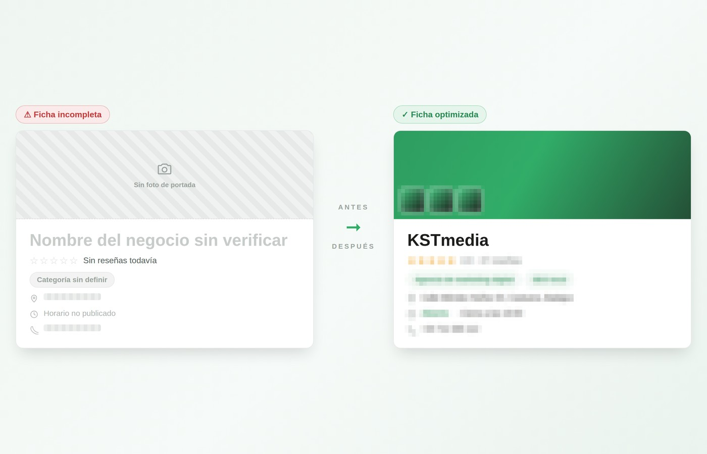
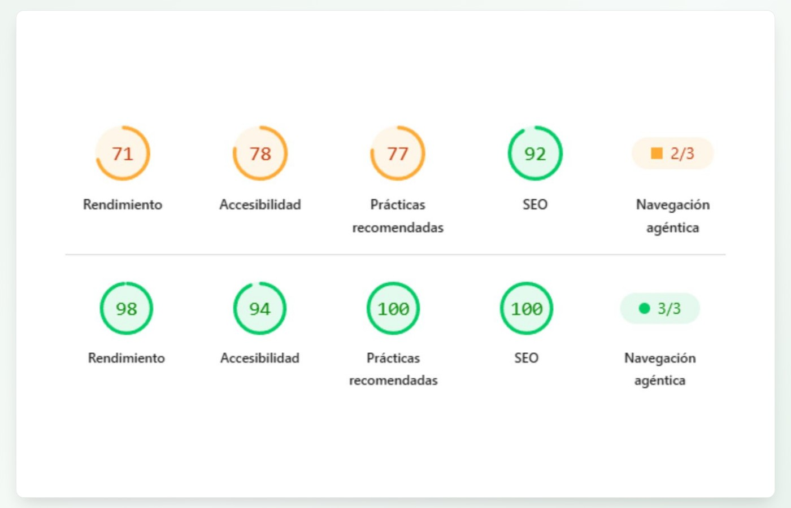
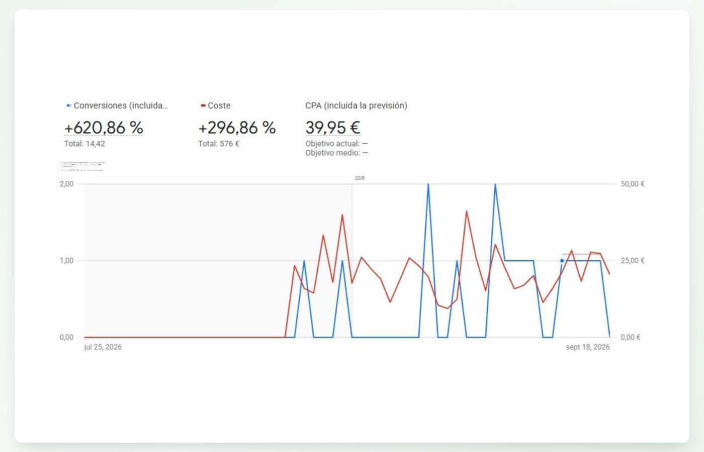

Servicios de SEO y Google Ads para negocios locales
Trabajamos un único canal a fondo: Google. Así es como lo dividimos. El primer contrato es siempre de 3 meses — el margen mínimo real para optimizar tu ecosistema digital y que el resultado se pueda medir con seriedad.
Ficha de Google optimizada
Trabajamos tu perfil de Google Business Profile para que aparezcas como la opción relevante en tu zona antes de que el cliente compare precios en ningún otro sitio.
- Auditoría completa de tu ficha actual
- Categoría principal y secundarias correctas
- Descripción y fotos que generan confianza real
- Estrategia de reseñas y respuesta a todas, buenas y malas
- Publicaciones periódicas para mantener la ficha activa
Primer contrato de 3 meses: el tiempo mínimo real para optimizar tu ficha y que el resultado se pueda medir en serio. Sin informes que no puedes entender: sabrás en cada momento qué se ha hecho y qué falta.

SEO técnico y de contenido
Optimizamos la estructura, velocidad y contenido de tu web para que Google —y cada vez más las IA generativas— te encuentren, te entiendan y te citen.
- Auditoría técnica: velocidad, indexación y errores
- Jerarquía de encabezados y estructura semántica correcta
- Contenido con experiencia real, no genérico (E-E-A-T)
- Investigación de palabras clave a partir de tu negocio real
- Preguntas frecuentes y datos estructurados para IA (GEO)
El contenido genérico ya no basta: trabajamos con el contexto real de tu negocio para que se note que hay experiencia detrás.

Google Ads con objetivo de negocio
Campañas de pago pensadas para generar clientes cualificados desde el primer día, mientras el SEO madura, con seguimiento de cada euro invertido.
- Campañas orientadas a tu cliente de ticket alto, no a volumen de clics
- Seguimiento de conversiones reales: llamadas, formularios, visitas
- Informes claros: sabrás a dónde va cada euro
- Ajuste continuo según resultados, no según intuición
No medimos el éxito en clics. Medimos en clientes potenciales cualificados, que es lo único que paga las facturas.
